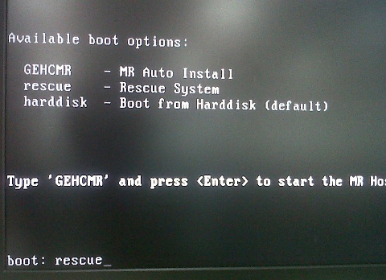
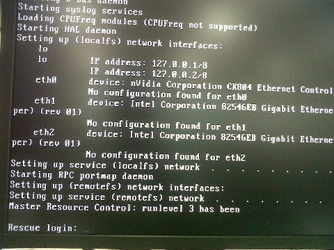

Proprietary to General Electric Company
Direction 5670006, Rev# 1
Discovery MR750w GEM Service Methods
Module Version 2.0, Version Date 7/6/11
Proprietary to General Electric Company |
| Required Persons | Preliminary Reqs | Procedure | Finalization |
|---|---|---|---|
| 1 | 60-120 |
The Disk Wipe procedure removes remnant boot or partition information from all disk drives. This prevents the OS installer from being confused by reused disk drives that contain previous boot and partition information. The typical symptom of OS installer confusion is that the OS load appears to succeed normally, but all subsequent hard disk boot attempts result in a Linux PANIC error because it tries to mount the wrong root partition.
Shut down the Host Computer.
Disconnect the SCSI tower.
Power on the Host Computer.
Insert the OS DVD and type rescue at the OS install prompt.
Illustration 1: OS Install Prompt

Type root at the Rescue login: prompt.
Illustration 2: Rescue Login Prompt

When the rescue prompt appears, type the following command and press [Enter]:
dd if=/dev/zero of=/dev/sda count=10240 bs=102400
Illustration 3: Rescue Prompt

When the rescue prompt appears again, type the following command and press [Enter]:
dd if=/dev/zero of=/dev/sdb count=10240 bs=102400
When the rescue prompt appears again, type the following command and press [Enter]:
dd if=/dev/zero of=/dev/sdc count=10240 bs=102400
| NOTE: | This takes less than a minute to complete per disk. |
Type halt to shut down the system.
Reconnect the SCSI tower.
Continue with LFC procedure.
Follow the below procedure only if the MBR procedure in Step fails to address the problem
Shut down the Host Computer.
Disconnect the SCSI tower.
Power on the Host Computer.
Insert the OS DVD and type rescue at the OS install boot prompt (see Step ).
Type root to login at the Rescue login: prompt (see Step ).
When the rescue prompt appears (see Step ), type the following command and press [Enter]:
dd if=/dev/zero of=/dev/sda bs=512000 &
When the rescue prompt appears again, type the following command and press [Enter]:
dd if=/dev/zero of=/dev/sdb bs=512000 &
When the rescue prompt appears again, type the following command and press [Enter]:
dd if=/dev/zero of=/dev/sdc bs=512000
| NOTE: | Wait for the commands to complete before rebooting the Host Computer. |
This takes about 16 minutes per disk to complete on a HP 9300 PC with three 73 GB disks. Ignore any messages indicating there is no space left on the device. For example: dd: writing `/dev/sdb’ : No space left on device.
Type halt to shut down the system.
Reconnect the SCSI tower.
Continue with the LFC procedure.
No finalization steps.